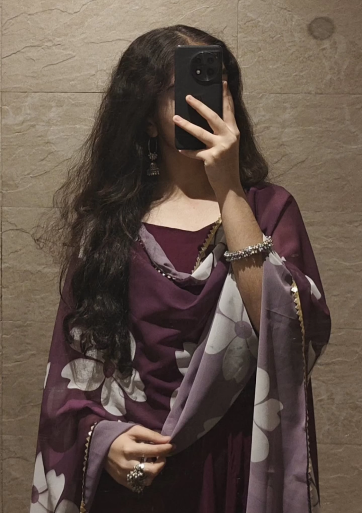

Dekho, I tried my best to give efforts. I know I can do more, but I really wanted to build something special for you.
Ever since I started talking to you, I haven't spoken about it directly. I've always been indirect, and sometimes it looks obvious.
I like you soooooooooooo muchhhhhh. Haven't said this ever... and there are more surprises to come.
